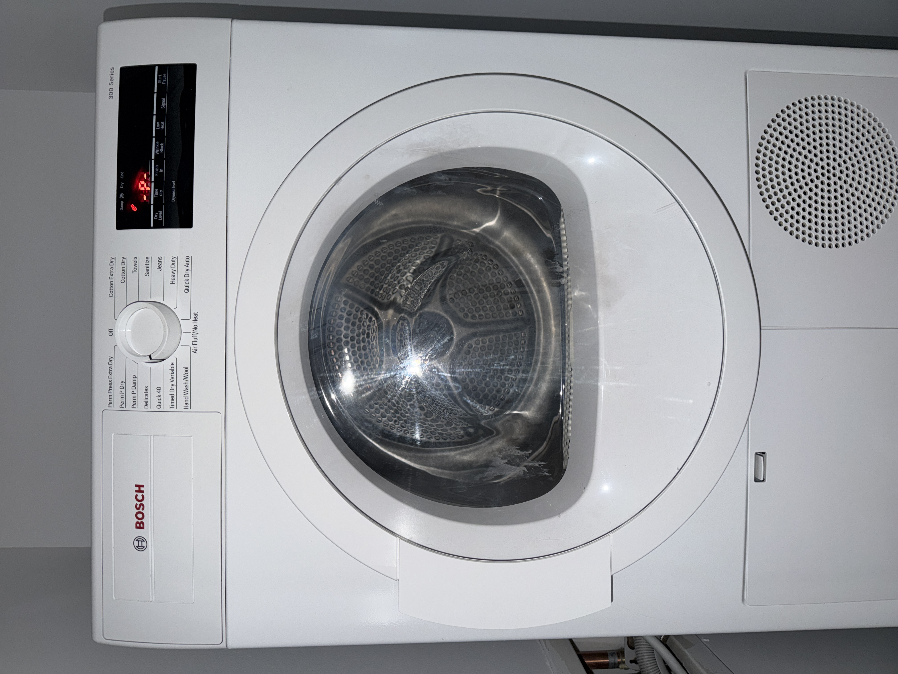

AN EVERYDAY APPLIANCE / A COMPUTATIONAL MODEL
One more Quick 40.
Inspired by my home dryer: choose a cycle, press Start, and check the clothes when it finishes.
Open the door to load clothes.
Demo speed: 1 second = 1 simulated minute. All cycles use 40 simulated minutes. Except for Quick 40, durations are placeholders. Added modes use simplified heat-on behavior; Air Fluff / No Heat keeps heat off. Real temperature and timing differences are not modeled. The moisture check is my proposed improvement.

THE REAL-WORLD STARTING POINT
My everyday routine
I usually use Quick 40. If the clothes still feel damp, I run it again. For items such as wool, I use No Heat. Opening the door interrupts the cycle; closing it requires another press of Start.
A simplified classroom simulation based on my routine, not a full reproduction of the appliance.